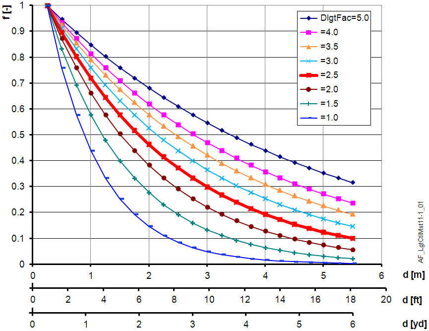

照明亮度管理器控制 (LgtCtlMst11)
Overview
应用功能》Lighting brightness manager control 11" (LgtCtlMst11）从房间内的亮度传感器测量开始，计算窗户亮度的理论日光分量。该计算出的日光值被提供给管理者从属配置下的从属照明控制AFs。
Function
亮度的日光分量（LgtDlgtcWnd）是使用亮度传感器测量值和传感器距窗户的安装距离计算得出的。
日光的衰减受到房间高度、窗户尺寸、房间颜色和其他条件的影响。参数日光系数 (DlgtFac) 用于适应控制：房间内的日光减少越少，系数越低，请参见下图。
默认值为 2.5（相当于标准间）。
如果日光减少偏离默认曲线，请更改 DlgtFac。使用照度计测量您房间的特性并相应地调整 DlgtFac。

d | 距窗户的距离 |
f | 日光减少系数 |
DlgtFac | Daylight factor |
Configuration
 Parameters
Parameters
描述 | 范围 | 默认值 |
|---|---|---|
Daylight factor | DlgtFac | 2.5 |
Distance to window | DsncWnd | 1 [m] |
Length unit | LngtUnit | [m] |
Interface
界面 | 描述 | 类型 | 参考号 | 拥有者 |
|---|---|---|---|---|
LgtDlgtcWnd | Lighting daylight calculated at the window | ACalcVal | ● | - |
Engineering and commissioning
Distance to window
测量亮度传感器到窗户的距离。
Daylight factor
测量结果表明，默认值适用于标准间。如果日光减少偏离默认曲线，请更改 DlgtFac。使用照度计测量您房间的特性并相应地调整 DlgtFac。
Sensor failure
如果亮度传感器无效，则亮度和计算出的日光值将切换为 0 lx。